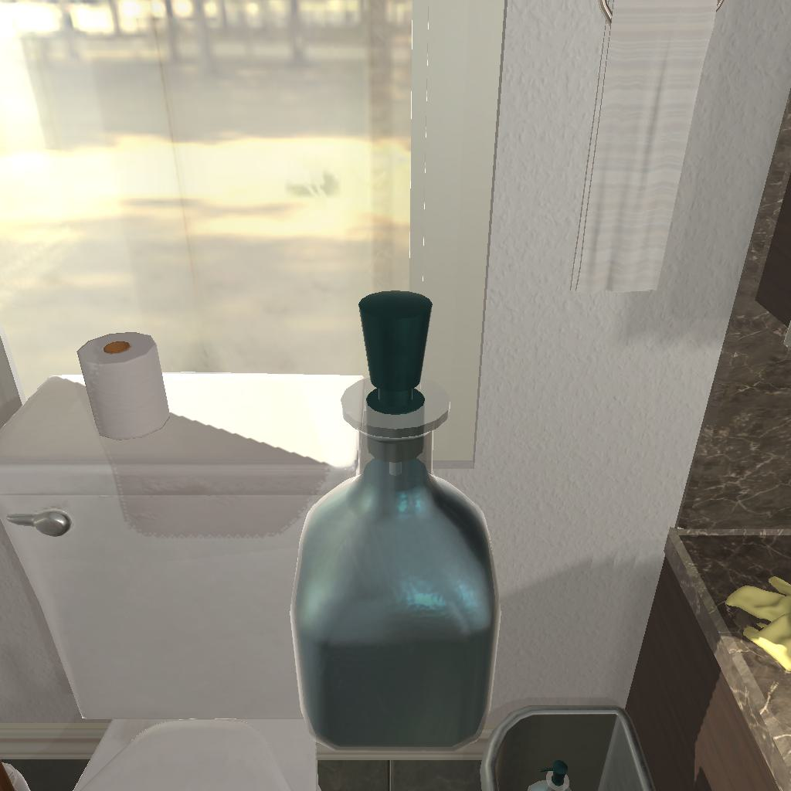

---------------------------------------------------------task: 27---------------------------------------------------------
--------------------------------------------------------------------------------------------------------------------------------------------------------------------
--------------------------------------------------------------------------------------------------------------------------------------------------------------------
Step:--------------------------------------------------------------------------9-------------------------------------------------------------------------------
----------------------------------------
VLM Prompt:
Image1:
Image2:
**Instruction**
1. Analyze the provided images to identify all visible household objects and compare the difference between images (e.h. whether the object is opened or not and taken on hand or not), focusing on those relevant to the task description "find two soapbottle and put them in garbagecan."
2. Use the analysis of images and the task hint "The agent must find an object of the desired type, pick it up, find the correct location to place it, put it down there, then look for another object of the desired type, pick it up, return to previous location, and put it down there with the other object." to answer the question: what is the most reasonable action in the choices for the task description "find two soapbottle and put them in garbagecan"?
3. Decide and write the answer using the template: The answer is: (i): , where i is the real number. If there is no desired object in images, search every place based on **Initial Observation** to find the object. And if no one is exactly correct, choose a similar answer.
**Initial Observation**
You are in the middle of a room. Looking quickly around you, you can see countertop (1), sinkbasin (1-2), sink (1-2), garbagecan (1), drawer (1-2), toilet (1), handtowelholder (1)
**Answer Choices**
(1): go to countertop 1
(2): go to sink 1
(3): go to drawer 1
(4): go to drawer 2
(5): go to sink 2
(6): go to sinkbasin 2
(7): go to toilet 1
(8): go to handtowelholder 1
(9): put soapbottle 2 in/on garbagecan 1
(10): examine soapbottle 2
(11): examine garbagecan 1
**Answer**
Let's think step by step by following the instructions.
----------------------------------------
----------------------------------------
Original Response:
Firstly, we need to identify the visible household objects in the images provided.
In Image 1, we can see a soap bottle on the countertop near the sink, a garbage can, and a yellow hand towel. In Image 2, we can see another soap bottle on top of the toilet tank, a roll of toilet paper, and a garbage can next to the toilet.
Now, considering the task description "find two soap bottles and put them in the garbage can," we need to locate and move both soap bottles to the garbage can.
In both images, the soap bottles appear to be closed and not in hand. They are simply placed on the countertop and toilet tank.
Based on the **Initial Observation**, we are in the middle of a room with a visible countertop, sink basin, sink, garbage can, drawer, toilet, and hand towel holder.
The most reasonable action to complete the task would be to first pick up one soap bottle and then the other, before placing them in the garbage can. The soap bottles are located on the countertop 1 and toilet 1.
Given the answer choices, the most reasonable action to perform next would be:
The answer is: (1): go to countertop 1
This action will bring the agent closer to the first soap bottle, allowing them to pick it up and move it to the garbage can as per the task description. Afterward, the agent can proceed to toilet 1 to pick up the second soap bottle and place it in the garbage can as well.
----------------------------------------
----------------------------------------
>>> Refine Original VLM Response and Get Pure Action: go to countertop 1
This action will bring the agent closer to the first soap bottle, allowing them to pick it up and move it to the garbage can as per the task description
----------------------------------------
-----------------------------------------------------------------
Running time: 11.964131355285645 seconds
Total Money: 14.05956
-----------------------------------------------------------------
-----------------------------------------------------------------
Text Observation:Nothing happens.
-----------------------------------------------------------------
UNSUCCEED